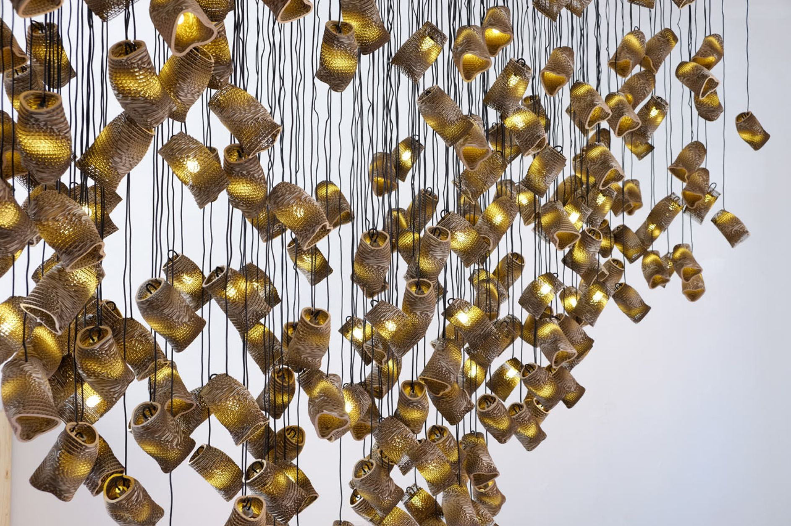
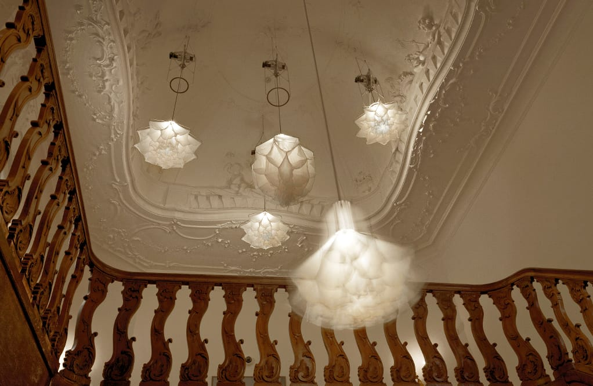
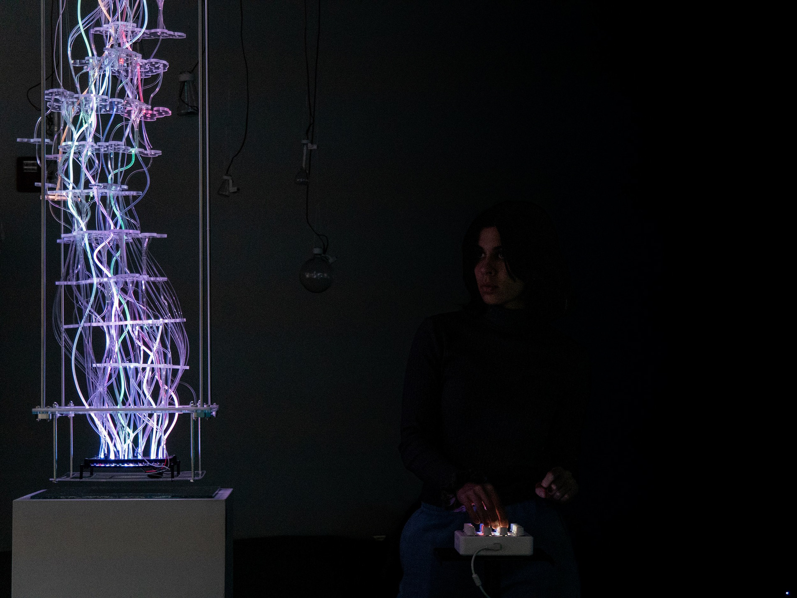
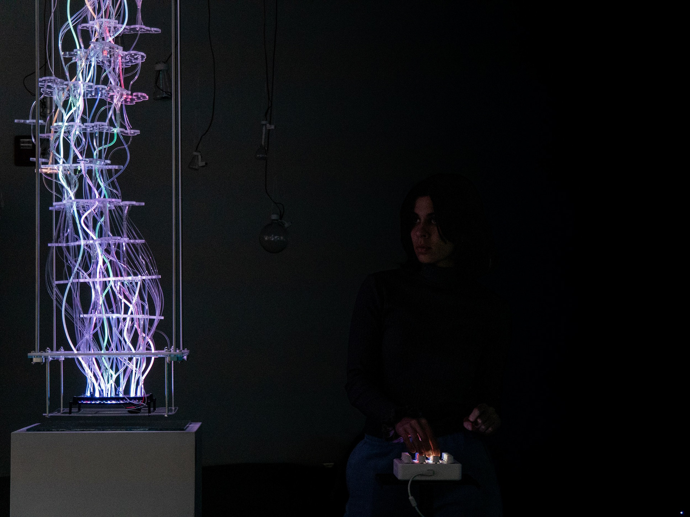
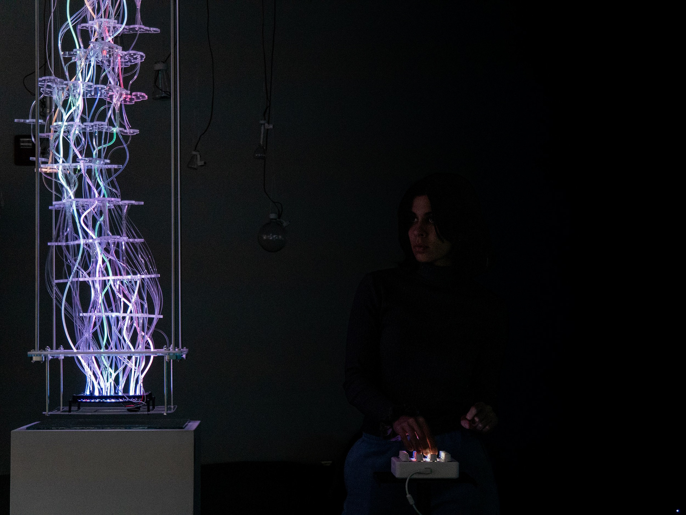

Abstract
Flocking and murmuration behavior describes how signals propagate through collections of agents following only local rules — no conductor, no plan, just emergence. We want to make lights that show these behaviors dynamically, taking cues from two modes: the structure of the light itself changing shape over time (as in Studio Drift's Shylight or Theo Jansen's Strandbeest), or patterns diffusing and spreading across a field of lights.
A third possibility comes from Dark Matter: mobile opaque elements moving in front of a constant light source, their interactions producing self-organizing shadow patterns. Rather than lights that move, lights that are obscured — emergence through subtraction.


 

